CURATED_EXPLORATORY. No C5-specific communication established. Spatial maps use within-section percentiles; raw values are saved. Matching balance is inadequate in most sections.
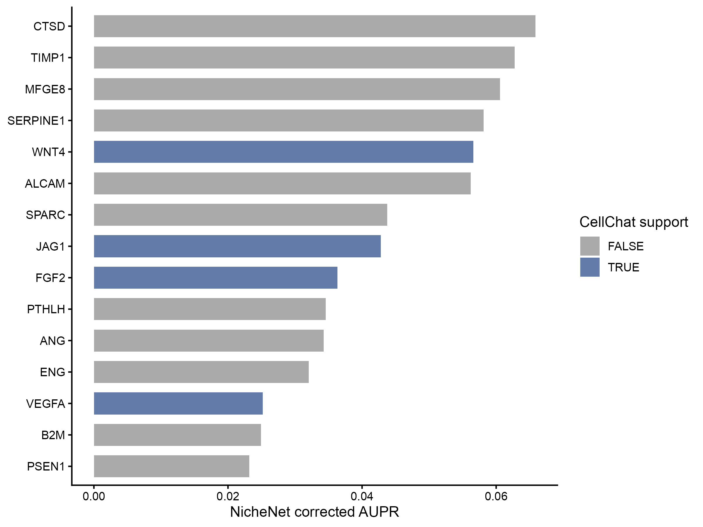
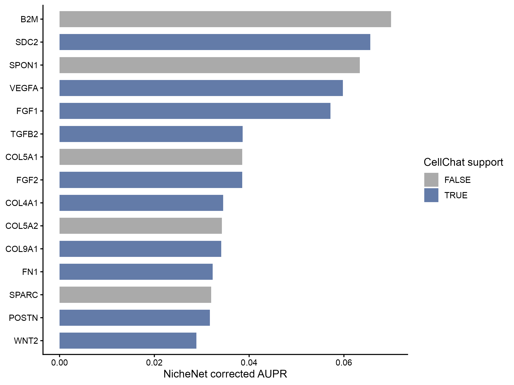
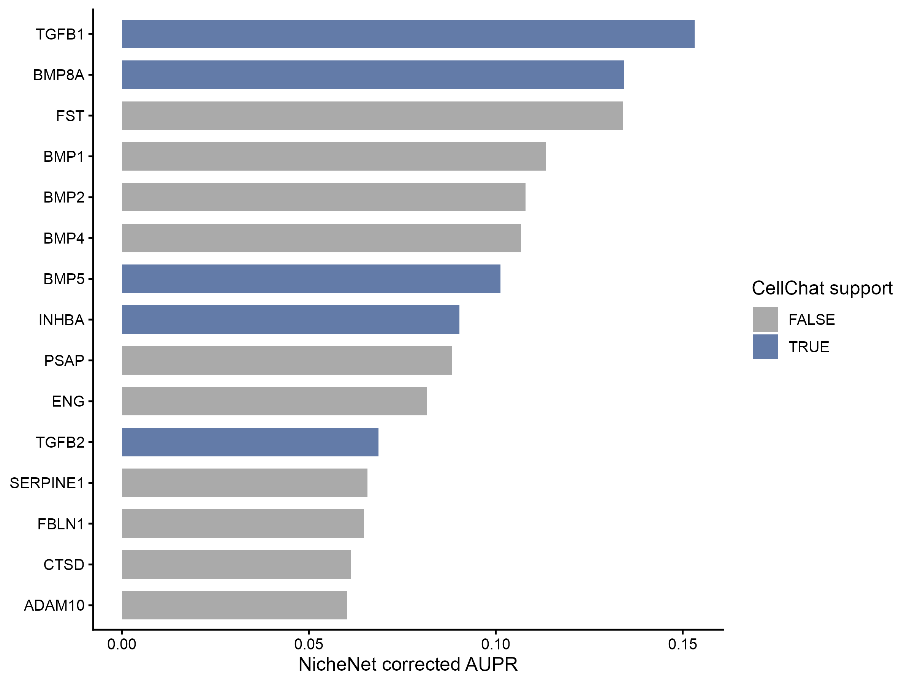
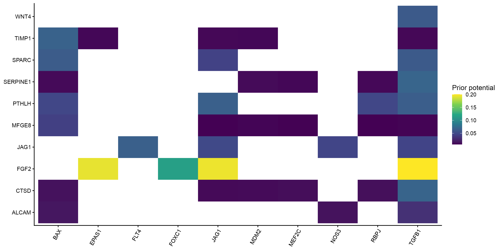
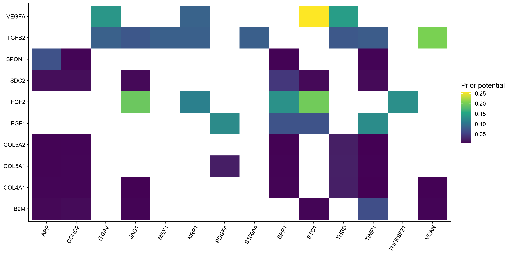
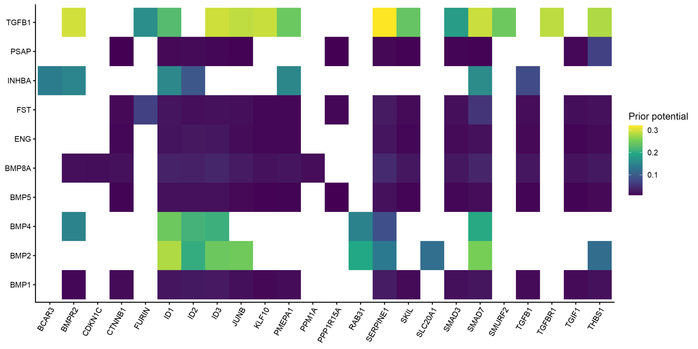
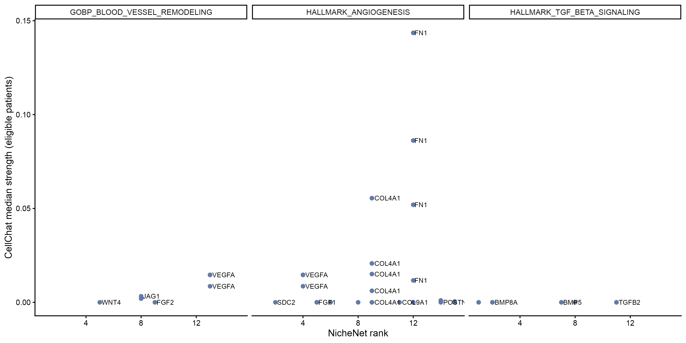
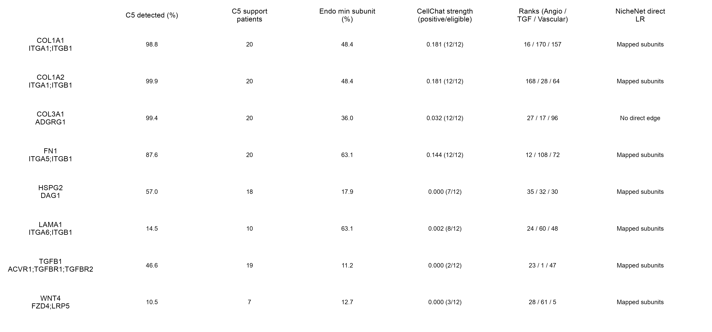
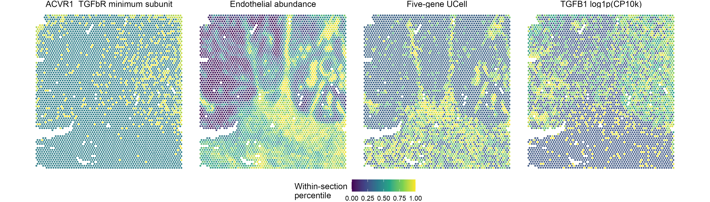
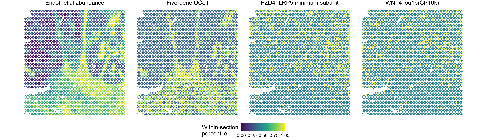
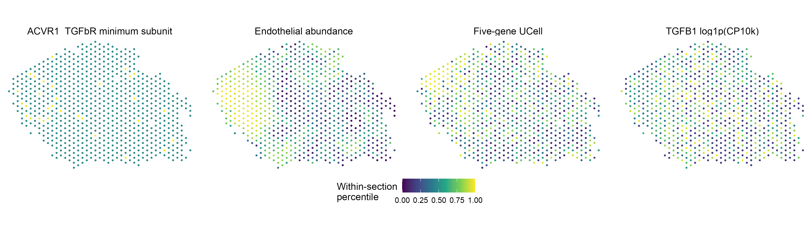
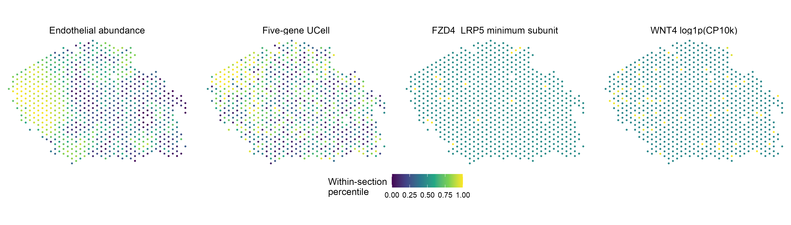
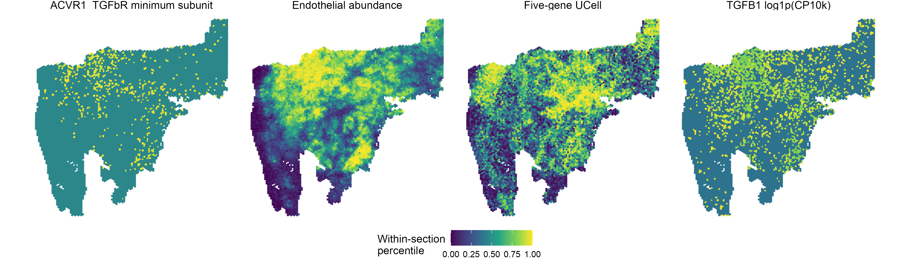
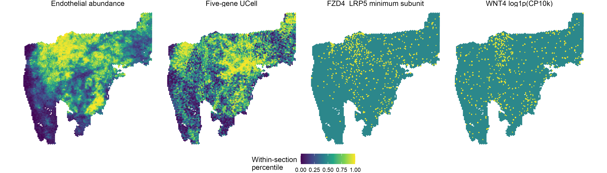
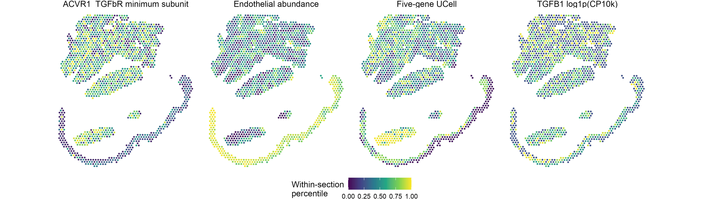
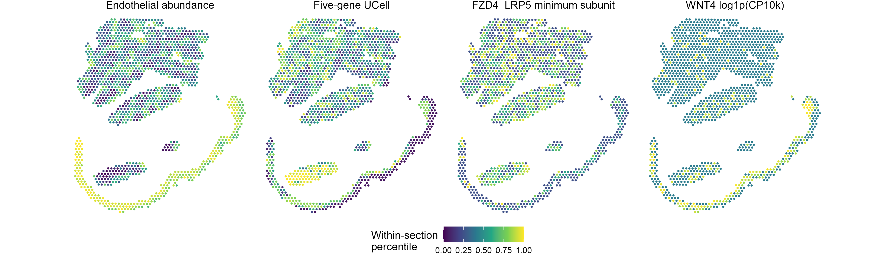
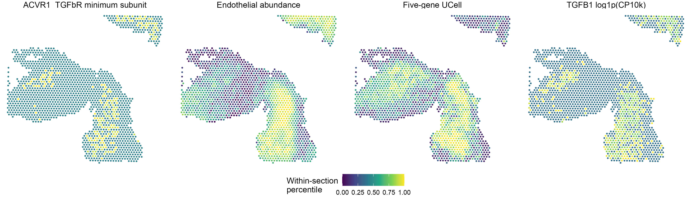
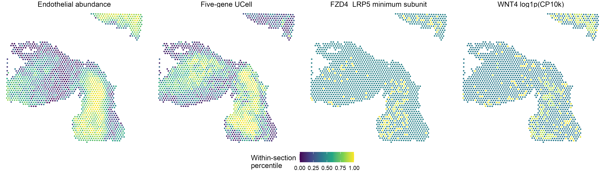
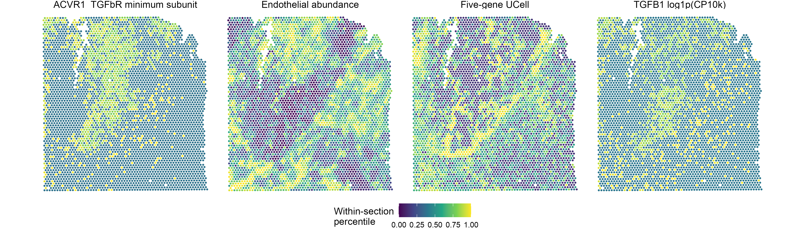
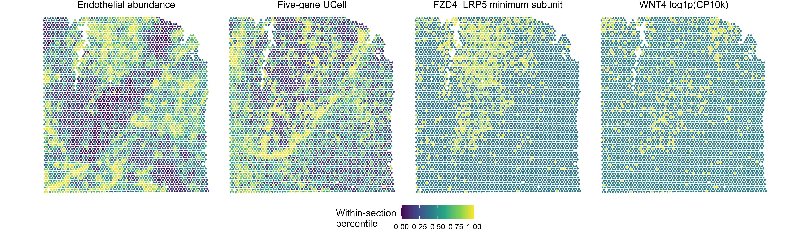
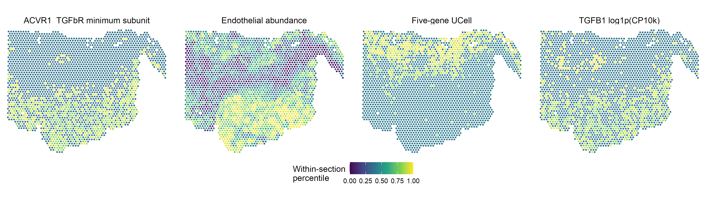
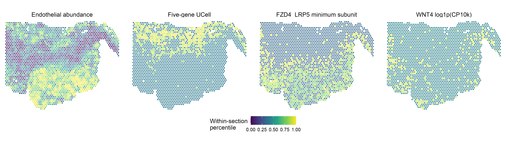
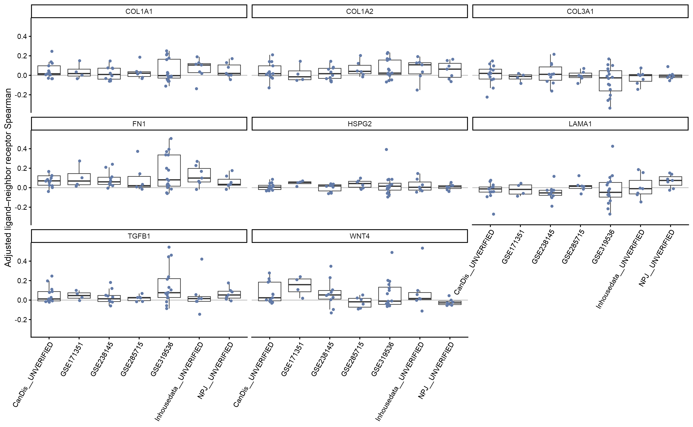
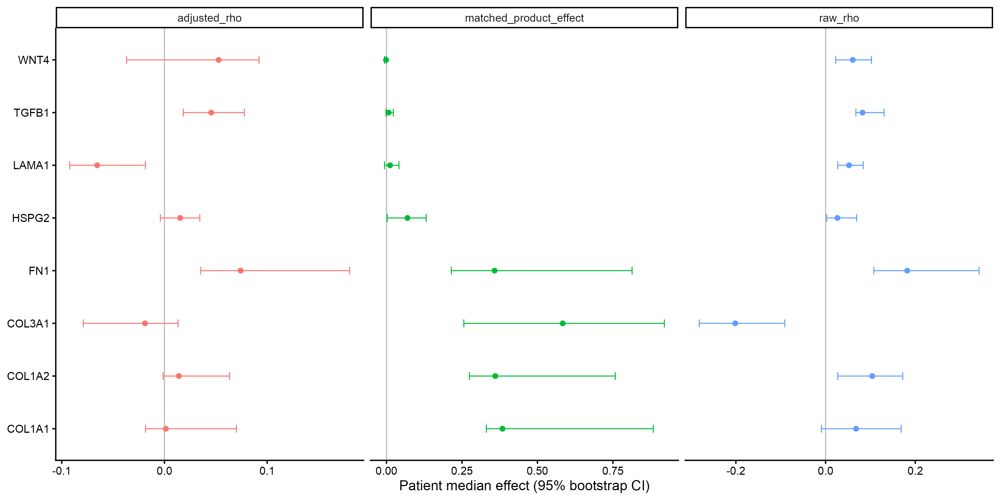